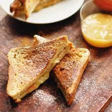

French Toast

A delicious french toast recipe for all ages.
This french toast recipe is not like any other. It is stuffed with cream cheese
and pears making for a delectable experience!
Ingredients
- 1 loaf of bread
- 8 ounces of cream cheese
- 1 teaspoon vanilla
- 1/2 cup pecans
- 4 eggs
- 1 cup heavy whipping cream
- 1 teaspoon nutmeg
- 3 tablespoons butter
Steps
- In a bowl mix cream cheese, vanilla and pecans. Set aside.
- Cut bread into 2 inch slices. Take each slice and cut a “pocket” in the top of each slice. Fill the pocket with 2 tablespoons of the cream cheese mixture and press the pocket closed.
- In another bowl beat the eggs until fluffy. Blend in the cream and nutmeg. Take the stuffed bread and dip both sides in the egg mixture.
- Melt 3 tablespoons butter in a frying pan and cook the stuffed bread slices until golden brown on both sides.
- Meanwhile, combine the pear preserves and orange juice in a small saucepan and heat thoroughly. Drizzle over the hot French toast and serve.